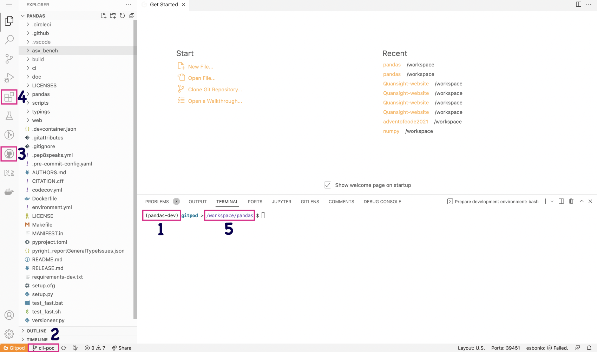

Using Gitpod for pandas development#
This section of the documentation will guide you through:
using Gitpod for your pandas development environment
creating a personal fork of the pandas repository on GitHub
a quick tour of pandas and VSCode
working on the pandas documentation in Gitpod
Gitpod#
Gitpod is an open-source platform for automated and ready-to-code development environments. It enables developers to describe their dev environment as code and start instant and fresh development environments for each new task directly from your browser. This reduces the need to install local development environments and deal with incompatible dependencies.
Gitpod GitHub integration#
To be able to use Gitpod, you will need to have the Gitpod app installed on your GitHub account, so if you do not have an account yet, you will need to create one first.
To get started just login at Gitpod, and grant the appropriate permissions to GitHub.
We have built a python 3.8 environment and all development dependencies will install when the environment starts.
Forking the pandas repository#
The best way to work on pandas as a contributor is by making a fork of the repository first.
Browse to the pandas repository on GitHub and create your own fork.
Browse to your fork. Your fork will have a URL like https://github.com/noatamir/pandas-dev, except with your GitHub username in place of
noatamir.
Starting Gitpod#
Once you have authenticated to Gitpod through GitHub, you can install the Gitpod Chromium or Firefox browser extension which will add a Gitpod button next to the Code button in the repository:

If you install the extension - you can click the Gitpod button to start a new workspace.
Alternatively, if you do not want to install the browser extension, you can visit https://gitpod.io/#https://github.com/USERNAME/pandas replacing
USERNAMEwith your GitHub username.In both cases, this will open a new tab on your web browser and start building your development environment. Please note this can take a few minutes.
Once the build is complete, you will be directed to your workspace, including the VSCode editor and all the dependencies you need to work on pandas. The first time you start your workspace, you will notice that there might be some actions running. This will ensure that you have a development version of pandas installed.
When your workspace is ready, you can test the build by entering:
$ python -m pytest pandas
Quick workspace tour#
Gitpod uses VSCode as the editor. If you have not used this editor before, you can check the Getting started VSCode docs to familiarize yourself with it.
Your workspace will look similar to the image below:
We have marked some important sections in the editor:
Your current Python interpreter - by default, this is
pandas-devand should be displayed in the status bar and on your terminal. You do not need to activate the conda environment as this will always be activated for you.Your current branch is always displayed in the status bar. You can also use this button to change or create branches.
GitHub Pull Requests extension - you can use this to work with Pull Requests from your workspace.
Marketplace extensions - we have added some essential extensions to the pandas Gitpod. Still, you can also install other extensions or syntax highlighting themes for your user, and these will be preserved for you.
Your workspace directory - by default, it is
/workspace/pandas-dev. Do not change this as this is the only directory preserved in Gitpod.
We have also pre-installed a few tools and VSCode extensions to help with the development experience:
Development workflow with Gitpod#
The Contributing to pandas section of this documentation contains information regarding the pandas development workflow. Make sure to check this before working on your contributions.
When using Gitpod, git is pre configured for you:
You do not need to configure your git username, and email as this should be done for you as you authenticated through GitHub. Unless you are using GitHub feature to keep email address private. You can check the git configuration with the command
git config --listin your terminal. Usegit config --global user.email “your-secret-email@users.noreply.github.com”to set your email address to the one you use to make commits with your github profile.As you started your workspace from your own pandas fork, you will by default have both
upstreamandoriginadded as remotes. You can verify this by typinggit remoteon your terminal or by clicking on the branch name on the status bar (see image below).
Rendering the pandas documentation#
You can find the detailed documentation on how rendering the documentation with Sphinx works in the How to build the pandas documentation section. To build the full docs you need to run the following command in the docs directory:
$ cd docs
$ python make.py html
Alternatively you can build a single page with:
python make.py --single development/contributing_gitpod.rst
You have two main options to render the documentation in Gitpod.
Option 1: using Liveserve#
View the documentation in
pandas/doc/build/html.To see the rendered version of a page, you can right-click on the
.htmlfile and click on Open with Live Serve. Alternatively, you can open the file in the editor and click on the Go live button on the status bar.
A simple browser will open to the right-hand side of the editor. We recommend closing it and click on the Open in browser button in the pop-up.
To stop the server click on the Port: 5500 button on the status bar.
Option 2: using the rst extension#
A quick and easy way to see live changes in a .rst file as you work on it
uses the rst extension with docutils.
Note
This will generate a simple live preview of the document without the
html theme, and some backlinks might not be added correctly. But it is an
easy and lightweight way to get instant feedback on your work, without
building the html files.
Open any of the source documentation files located in
doc/sourcein the editor.Open VSCode Command Palette with Cmd-Shift-P in Mac or Ctrl-Shift-P in Linux and Windows. Start typing “restructured” and choose either “Open preview” or “Open preview to the Side”.

As you work on the document, you will see a live rendering of it on the editor.

If you want to see the final output with the html theme you will need to
rebuild the docs with make html and use Live Serve as described in option 1.
FAQ’s and troubleshooting#
How long is my Gitpod workspace kept for?#
Your stopped workspace will be kept for 14 days and deleted afterwards if you do not use them.
Can I come back to a previous workspace?#
Yes, let’s say you stepped away for a while and you want to carry on working on your pandas contributions. You need to visit https://gitpod.io/workspaces and click on the workspace you want to spin up again. All your changes will be there as you last left them.
Can I install additional VSCode extensions?#
Absolutely! Any extensions you installed will be installed in your own workspace and preserved.
I registered on Gitpod but I still cannot see a Gitpod button in my repositories.#
Head to https://gitpod.io/integrations and make sure you are logged in.
Hover over GitHub and click on the three buttons that appear on the right.
Click on edit permissions and make sure you have user:email,
read:user, and public_repo checked. Click on Update Permissions
and confirm the changes in the GitHub application page.

How long does my workspace stay active if I’m not using it?#
If you keep your workspace open in a browser tab but don’t interact with it, it will shut down after 30 minutes. If you close the browser tab, it will shut down after 3 minutes.
My terminal is blank - there is no cursor and it’s completely unresponsive#
Unfortunately this is a known-issue on Gitpod’s side. You can sort this issue in two ways:
Create a new Gitpod workspace altogether.
Head to your Gitpod dashboard and locate the running workspace. Hover on it and click on the three dots menu and then click on Stop. When the workspace is completely stopped you can click on its name to restart it again.
I authenticated through GitHub but I still cannot commit to the repository through Gitpod.#
Head to https://gitpod.io/integrations and make sure you are logged in.
Hover over GitHub and click on the three buttons that appear on the right.
Click on edit permissions and make sure you have public_repo checked.
Click on Update Permissions and confirm the changes in the
GitHub application page.
Acknowledgments#
This page is lightly adapted from the NumPy project .